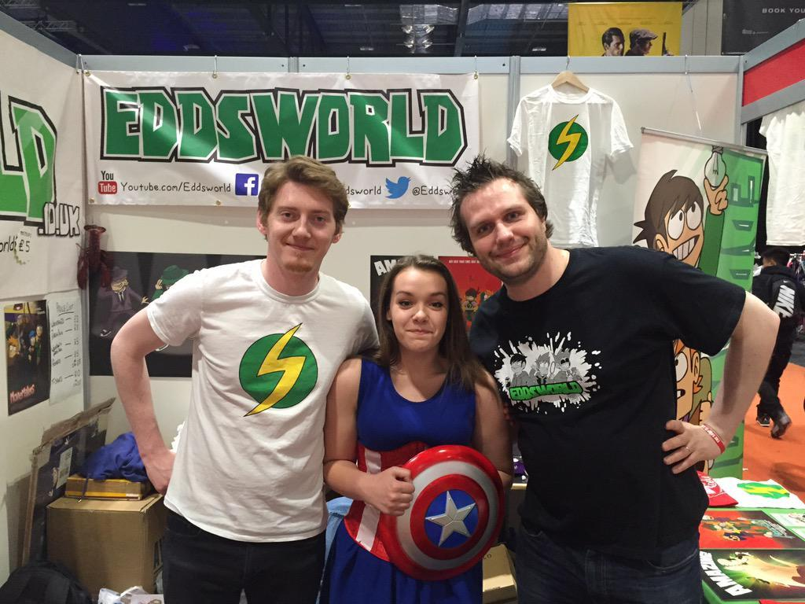
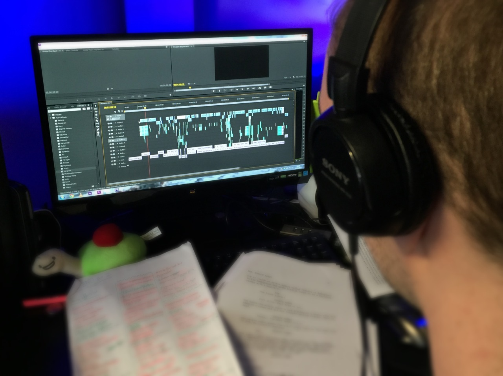

Illustrated by calweirart.tumblr.com
Illustrated by calweirart.tumblr.com

Illustrated by Chloe Dungate
Hey Eddheads, Tom here.
I have a some good news and some bad news and I think I’ll save the good news for last so we can end this post on a high note.
In all my years working on Eddsworld I still haven’t learnt my lesson about announcing future release dates. In short, they’re wrong. All of them. I’m hereby announcing that we will only be posting release dates once the animation on an eddisode is complete. This is for a few reasons but it’s mostly so the animators can work in peace and not constantly feel like they’re running behind schedule. Between Mirror Mirror, Saloonatics, and The End there’s around 30 minutes of Eddsworld currently on the way. Last thing these guys need is more stress.
We’re also very sad to say goodbye to Kreid as one of the lead animators on the show but we wish him the absolute best of luck with his other endeavours! Also fear not, another animation duo has already begun work on Saloonatics. We’ll let you know who once we have something to actually show you.
But now for some good news! Since there’s been so little new stuff for you to enjoy I’m going to make it my personal mission to reboot the weekly Eddsworld comics starting this Sunday! Much like the show itself the art styles will probably change here and there but hey… Comics!
So yeah, apologies for all the hold ups but I really hope you enjoy what’s to come… uh… Eventually.
- Tom

Matt and Eddie with the real Captain America.
The End (Part 1)

Elliot working on the soundscape for The End (Part 2)
Hey Eddheads! Tom here. We know it seems like things have gone silent over here but the truth is making cartoons is surprisingly quiet work. Here’s a little update on everything that’s going on right now!
Sandra is almost finished with animation on ‘Mirror Mirror’ - she’s letting everyone know how she’s getting on via her Twitter so make sure to follow her on there. Kreid and Paul are working away on their episodes too.
Elliot is currently editing the soundscape for ‘The End (Part 2)’ alongside the Eddsworld Documentary (which we’re hoping to release either after ‘Saloonatics’ or between the two halves of ‘The End’).
Matt and Eddie just spent a weekend meeting a bunch of you and playing some previews of the upcoming eddisodes at the MCM Comic Con here in the UK.
We’ll also be making our third (and largest) charity donation once Mirror Mirror is finished which is awesome! In case you’re unaware how Eddsworld works we donate 100% of the money the show makes (through YouTube ads and merch sales) to CLIC Sargent, a charity which helps young folk with cancer. The money we use to run Eddsworld was donated to us by you guys 3 years ago. As cheesy as it sounds all of this is made possible by you and I thank you so much for that.
- Tom